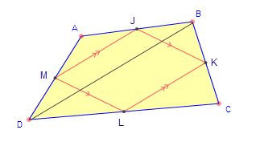

If you find the midpoints of each side of any quadrilateral, then link them sequentially with lines, the result is always a parallelogram. This may seem unintuitive at first, but if you drag any vertex of the quadrilateral above, you will see it is in fact always true, even when the quadrilateral is 'self-crossing' - where some sides of the quadrilateral cross over other sides.
The figure below is the same as above, except with the points J,K,L, M labelled and the line DB added. By definition J,K,L,M are the midpoints of their respective sides.

| Argument | Reason | |
|---|---|---|
| 1 | JM is the midsegment of the triangle ABD | The midsegment of a triangle is a line linking the midpoints of two sides (See Midsegment of a triangle) |
| 2 | JM is half DB and parallel to it | From the properties of the midsegment of a triangle |
| 3 | Likewise in triangle DBC, LK is also half DB and parallel to it | From the properties of the midsegment of a triangle |
| 4 | JKLM is a parallelogram | A pair of opposite sides (LK and JM) are parallel and congruent |